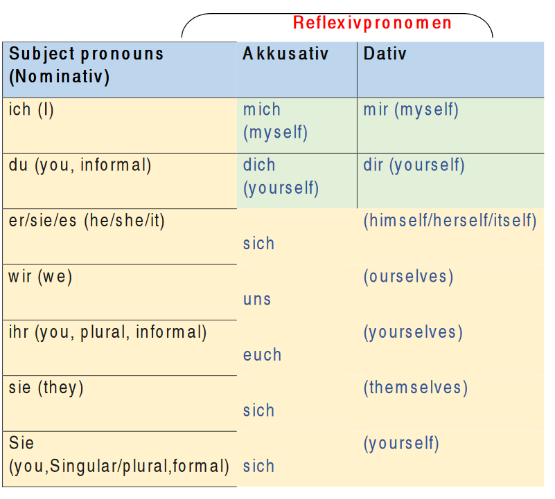

Reflexive verbs - Reflexive Verben
What is a reflexive verb?
We use reflexive verbs when the Subject and the object are the same in a sentence or the person is doing the action to himself or herself.
For example:
Ich wasche mich. (I wash myself)
Here the object is a reflexive pronoun.
Ich wasche mein Auto. (I wash my car)
Here the subject and the object are not the same
In the first example (Ich wasche mich) the subject and the object are the same, that’s why we use reflexive pronouns. The reflexive verbs consist of 2 parts: a verb and a reflexive pronoun
What are the reflexive pronouns?
The reflexive pronouns are words such as ‘myself’, ‘yourself’ which are reflecting back to the subject. They can be a direct object (in accusative case) or an indirect object (in a dative case).
Reflexive pronouns are as follows:

Most of reflexive verbs take the accusative pronouns:
Beispiel:
- sich entschuldigen (to apologize
Ich entschuldige mich für die Verspätung.
(I apologize for being late)
- sich erholen (to relax)
Möchten Sie sich erholen und entspannen? (Would you like to spend some time resting and relaxing?)
sich umsehen (to look around)
Man kann einfach reingehen und sich umsehen.
(You can get inside and just look around.)
- Sich erinnern (to remember)
ich erinnere mich überhaupt nicht daran.
(I don't remember it at all.)
Übung (Exercise):
Ergänzen Sie die Sätze mit dem richtigen Reflexivpronomen.
(Complete the sentences with the correct reflexive pronoun)
- Er interessiert ..... für die Wirtschaft
- Sie entschuldigt ..... für die Verspätung.
- Ich ziehe .... Schnell an.
- Mein Kind wäscht ..... jeden Tag.
- Mein Bruder duscht ......